10 部片单 · 恐怖 / 科幻 / 惊悚 / 悬疑 / 剧情
| # | 片名 | 类型 | 评分 / 状态 |
|---|---|---|---|
| 01 | 极度恐慌 | 惊悚 / 科幻（美国 · 一只猴子带来的东西） | 7.9 / 60% / 51 |
| 02 | 惊变28天 | 恐怖 / 科幻（英国 · 一座空掉的伦敦） | 7.2 / 87% / 73 |
| 03 | 后天 | 科幻 / 灾难（美国 · 一场被警告过的寒潮） | 8.3 / 45% / 47 |
| 04 | 盲流感 | 惊悚 / 剧情（加拿大 / 巴西 / 日本 · 一场白色的失明） | 7.2 / 44% / 45 |
| 05 | 末日危途 | 剧情 / 惊悚（美国 · 一辆超市推车里的全部家当） | 7.6 / 74% / 64 |
| 06 | 艾利之书 | 动作 / 惊悚（美国 · 一本不能再丢的书） | 6.8 / 46% / 53 |
| 07 | 传染病 | 惊悚 / 剧情（美国 · 一条传播链的完整复现） | 7.4 / 85% / 70 |
| 08 | 雪国列车 | 科幻 / 动作（韩国 / 捷克 · 一节车厢一个阶层） | 7.6 / 94% / 84 |
| 09 | 湮灭 | 科幻 / 惊悚（美国 / 英国 · 一片会折射一切的区域） | 7.2 / 88% / 79 |
| 10 | 芬奇 | 科幻 / 剧情（美国 · 一个人、一条狗、一台机器人） | 8.4 / 74% / 58 |
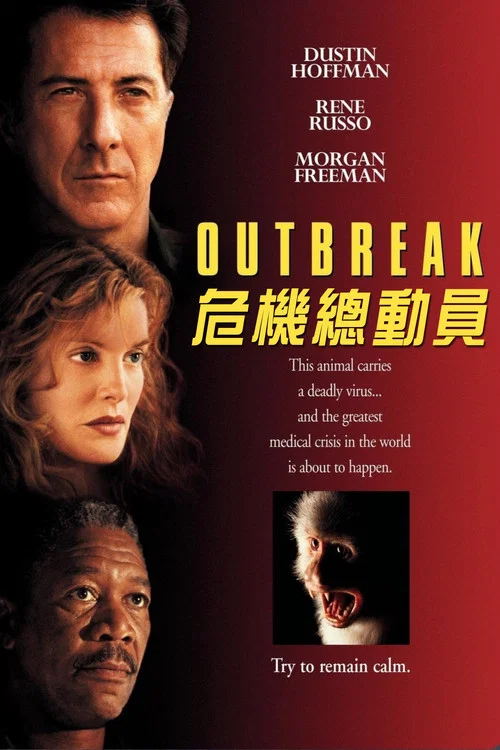
极度恐慌 Outbreak
「它暂时还不是空气传播的。」
剧情梗概
一种来自非洲的致命病毒，被一只携带它的猴子带进了美国。军医山姆·丹尼尔斯与前妻、疾控中心的罗比一起追查源头：感染者会在几天内死亡，而唯一的抗血清握在军方手里。他锁定了那只猴子的位置，上面下来的命令却是：让它消失，连同那座小镇一起。
亮点
- 沃尔夫冈·彼得森执导（《从海底出击》《空军一号》），改编自理查德·普雷斯顿 1994 年的非虚构作品《血疫》——那本书写的正是埃博拉。
- 成本约 5000 万美元，全球票房约 1.9 亿美元；这是好莱坞第一次把「病毒」拍成一部 A 级大制作惊悚片。
- 片中的病毒叫「莫塔巴」，在电子显微镜下被做成一条会动的项链——当年是被吐槽最多的一处，但后来成了这类片的视觉定式。
- 达斯汀·霍夫曼与摩根·弗里曼第一次合作，两人的对手戏几乎构成了全片的全部张力；凯文·史派西演那个感染后仍坚持上班的同事。
- 它拍在艾滋病议题最紧张的那几年之后，也在「9·11」与 SARS 之前——这个时间点决定了它看待传染病的方式。
- 豆瓣 7.9 / IMDb 6.6 / 烂番茄 60% / Metacritic 51：典型的「当年很吓人，今天看仍然很吓人」。
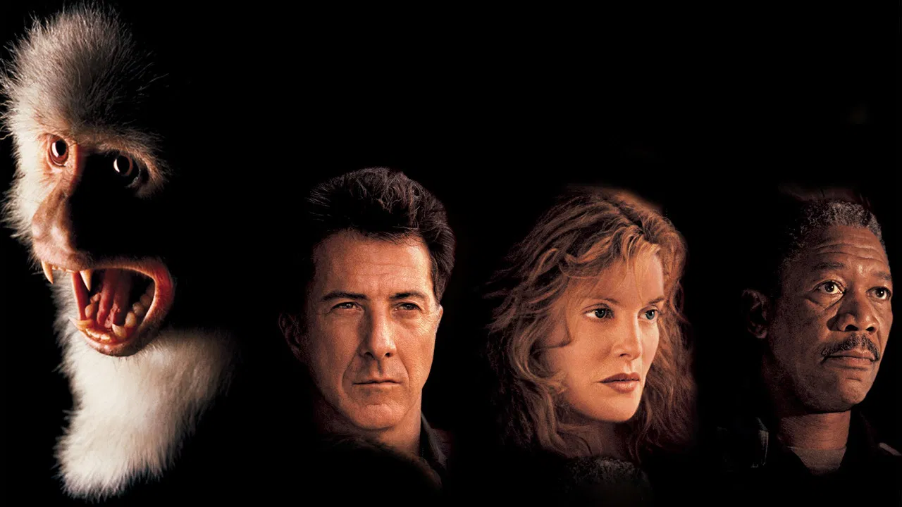
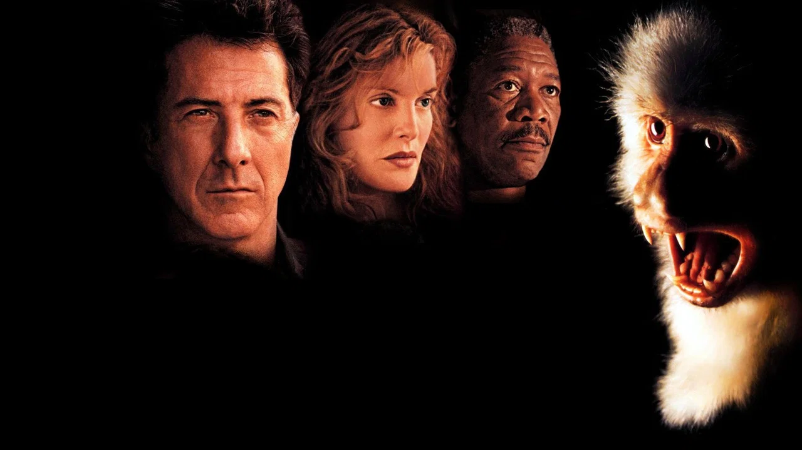
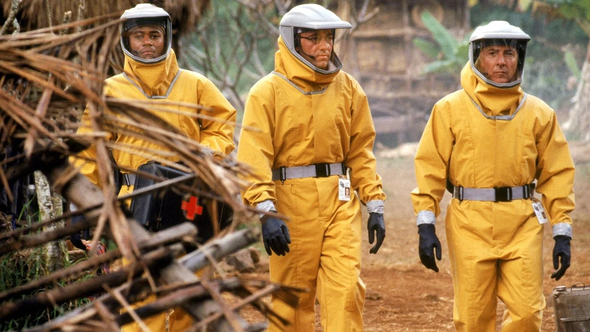
导演与主创 · 他们的历史作品
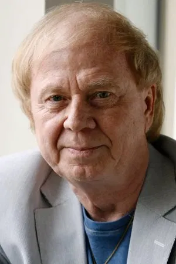
 特洛伊
特洛伊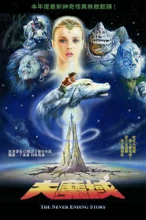
大魔域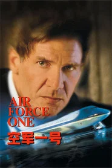
空军一号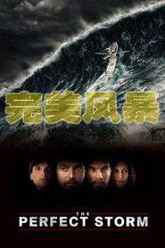
完美风暴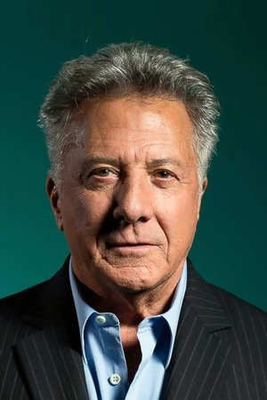
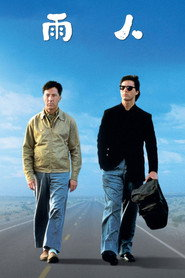
雨人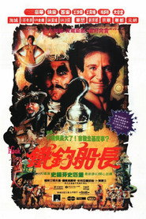
铁钩船长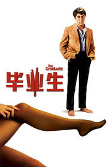
毕业生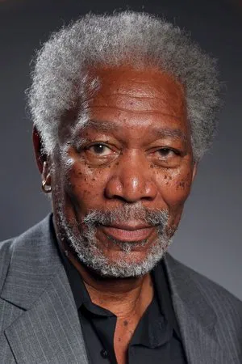
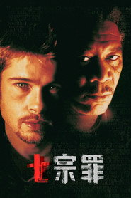
七宗罪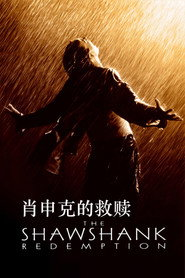
肖申克的救赎 遗落战境
遗落战境短评（轻微剧透）
轻微剧透：真正的转折在军方为什么要掩盖——不是因为病毒有多危险，而是因为「它是被造出来的」这件事不能被知道。彼得森把惊悚片的引擎放在官僚系统里：山姆每往前走一步，都有一个更大的机构在往后拉。轻微剧透：结尾小镇轰炸的命令被撤销，靠的是一次「从飞机上追直升机」的动作设计；它俗，但这是全片唯一允许自己爽一次的地方。
为什么值得一看
想看「流行病题材在被现实追上之前长什么样」的人；能接受 90 年代大片节奏、科学细节被戏剧化处理的观众。128 分钟，节奏紧凑。含较写实的病患与动物实验镜头，建议小学以上陪同观看。内地未映，流媒体可看。看完想继续：《传染病》《血疫》（剧集）《惊变28天》。
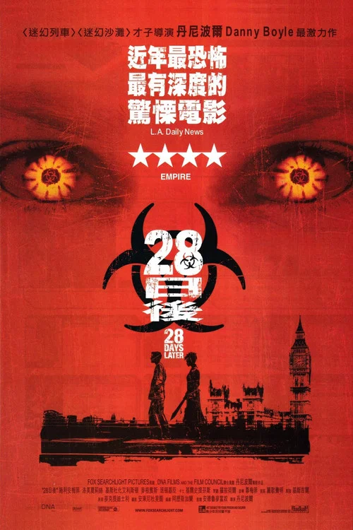
惊变28天 28 Days Later
「二十八天前，一切还在正常进行。」
剧情梗概
动物保护者闯进实验室，放走了被注射过「狂暴」病毒的黑猩猩。二十八天后，自行车快递员吉姆从昏迷中醒来，医院是空的，伦敦是空的。他遇见塞莱娜，才知道这二十八天里发生了什么；也才知道，城外驻扎的军队在广播里说的那句「我们有解药」，未必是给人听的。
亮点
- 丹尼·博伊尔执导，亚力克斯·加兰编剧——加兰后来自己拍了《机械姬》与《湮灭》，本期片单里他是唯一横跨两部的人。
- 成本约 800 万美元，全球票房约 8200 万美元；它把「丧尸」从缓慢的、被诅咒的，改成了会冲刺的、被感染的。
- 全片用小型数码摄影机拍摄，画面粗糙、过曝、常常欠曝——这是预算决定的，后来成了后末日影像的一种定式。
- 空伦敦那几场戏是在清晨封路拍的，一天只有几十分钟窗口：那些画面不是 CG 抹掉的城，是真的没人。
- 基利安·墨菲当时几乎没人认识，二十一年后他凭《奥本海默》拿到奥斯卡最佳男主角。
- 豆瓣 7.2 / 烂番茄 87% / Metacritic 73 / IMDb 7.5：本期专业评价最高的一部之一。
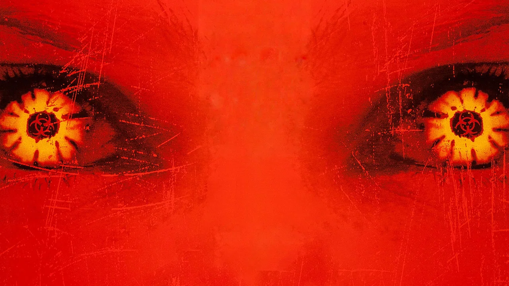
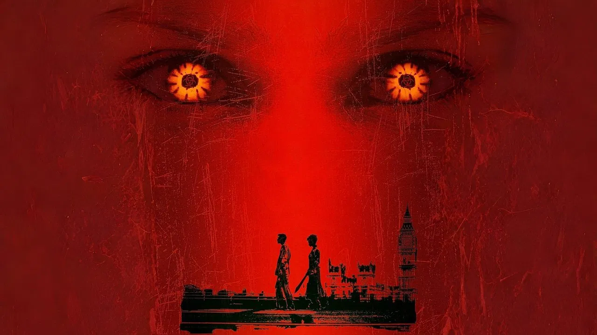
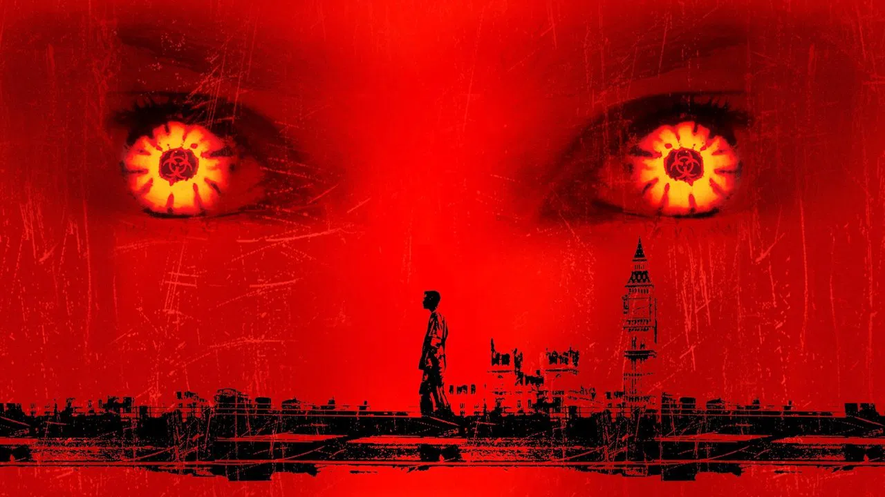
导演与主创 · 他们的历史作品
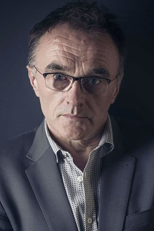
 贫民窟的百万富翁
贫民窟的百万富翁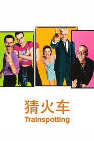
猜火车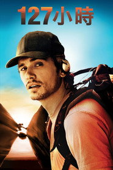
127小时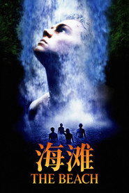
海滩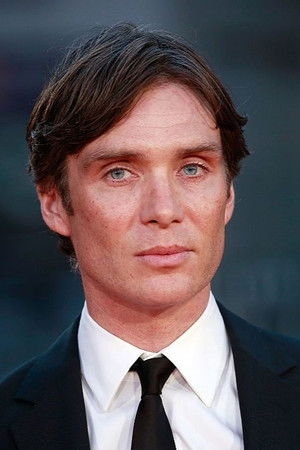
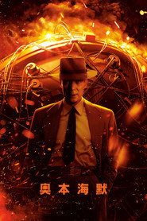
奥本海默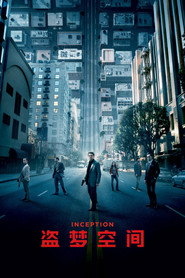
盗梦空间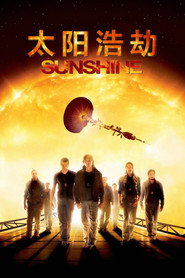
太阳浩劫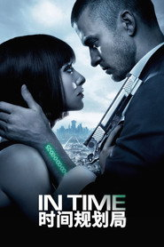
时间规划局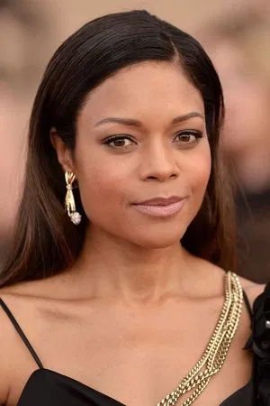
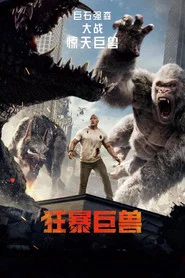
狂暴巨兽 007：大破天幕杀机
007：大破天幕杀机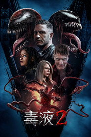
毒液2 007：幽灵党
007：幽灵党短评（轻微剧透）
轻微剧透：真正的转折在主角们抵达军营之后——病毒不是全片最坏的东西。加兰把剧本的重心放在后半段：当「安全」由一个持枪的男人来定义时，那个营区比空城更接近地狱。轻微剧透：结尾那句从天上飞过、没人回应的求救，是博伊尔给这个类型留下的最狠的一笔：获救不一定等于被看见。
为什么值得一看
想看「现代丧尸片从哪里开始」的人；能接受手持 DV 质感、血腥镜头较直接、以及后半段突然转向人性黑暗的观众。113 分钟。R 级，含暴力与血腥，建议成年观看。内地未映，流媒体可看。看完想继续：《惊变28周》《惊变28年》《我是传奇》。
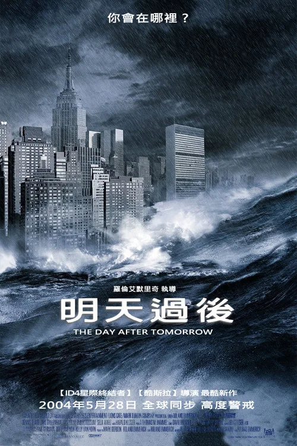
后天 The Day After Tomorrow
「给我一个理由，一个能让他听得懂的理由。」
剧情梗概
气候学家杰克·霍尔在一次国际会议上说：北极冰盖融化会让洋流改道，冰河期不是几百年后的事，可能就在几周内。没人当真。然后东京下冰雹、洛杉矶被龙卷风撕开、纽约被海啸灌满，北半球开始生成新的冰盖。他只能往北走，去把困在纽约公共图书馆里的儿子带出来。
亮点
- 罗兰·艾默里奇自编自导自制片，成本约 1.25 亿美元，全球票房约 5.52 亿美元。
- 第 58 届英国电影学院奖最佳特殊视觉效果；第 14 届 MTV 电影奖最佳动作场面。
- 全片约九成镜头含特效，是当年特效镜头数量最多的项目之一；海啸淹曼哈顿那场是在接近真实比例的水池里拍的。
- 内地 2004-05-28 上映，与北美几乎同步——很多人的「灾难片」概念是从这部开始的。
- 科学界对它意见很大：把几百年的过程压缩进几天，是被批评最多的一点。
- 豆瓣 8.3，但 IMDb 只有 6.5、烂番茄 45%、Metacritic 47：**本期华语观众与欧美影评落差最大的一部**。
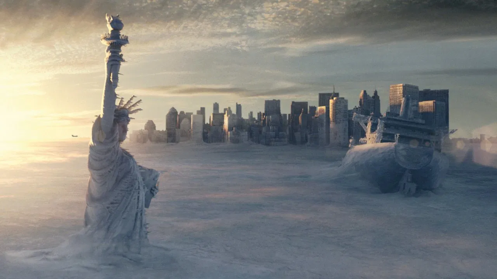
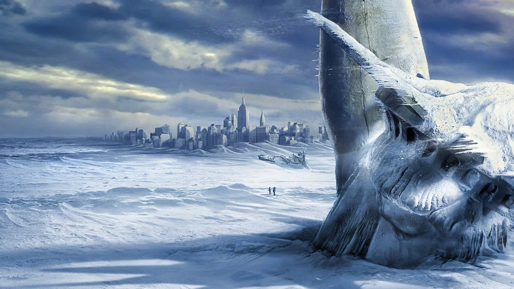
导演与主创 · 他们的历史作品
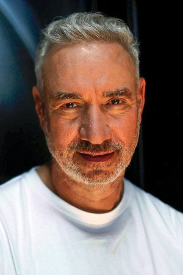
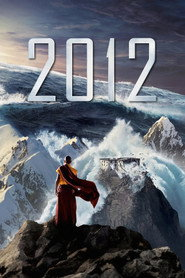
2012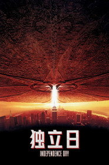
独立日 独立日2：卷土重来
独立日2：卷土重来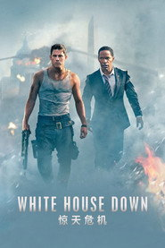
惊天危机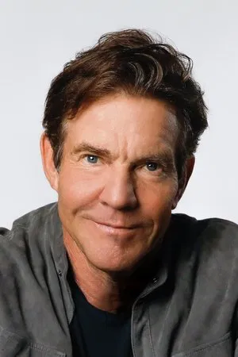
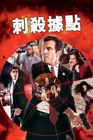
刺杀据点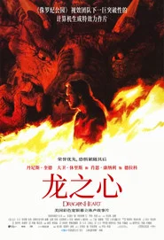
龙之心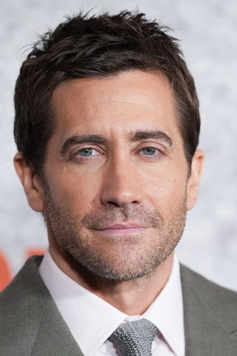
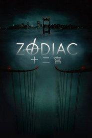
十二宫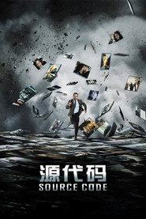
源代码短评（轻微剧透）
轻微剧透：真正的转折在图书馆里那场讨论——烧书取暖的时候，他们先烧的是税法，留下的那本是谁都不肯动的。艾默里奇从不在人物上花太多力气，但他知道怎么让一个灾难有「日常感」：冷是具体的，饿是具体的，隔着冰面打电话是具体的。轻微剧透：结尾父亲走进图书馆、看见儿子活着那一镜，观众哭的不是团圆，是「他真的走完了那几百公里」。
为什么值得一看
想看最大号的灾难奇观、同时能容忍科学夸张与人物单薄的人；124 分钟，节奏很稳，几乎不冷场。灾难场面有人员伤亡表现，建议小学以上观看。内地 2004 年公映过，流媒体可看。看完想继续：《2012》《独立日》《末日逃生》。
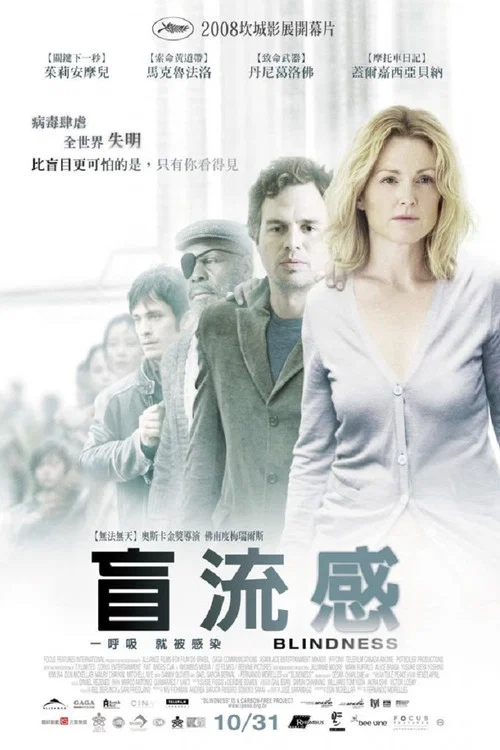
盲流感 Blindness
「我看不见，我只是看得见太多了。」
剧情梗概
一座城市里的人开始一个接一个地失明——不是黑，是一片牛奶一样的白。第一名患者被送进隔离区，他的妻子假装也失明了，陪他进去，成为唯一还能看见的人。隔离区很快爆满、很快失控，有人开始按病房分配食物，也开始按病房分配女人。
亮点
- 费尔南多·梅里尔斯执导——他把《上帝之城》的那套群像调度搬进了一个完全抽象的设定里。
- 改编自若泽·萨拉马戈 1995 年的诺贝尔文学奖小说；原著里所有人物都没有名字，只有「医生的妻子」「第一个失明的人」。
- 朱丽安·摩尔演「医生的妻子」：全片唯一没有失明的人，也是唯一一个必须一直装下去的人。
- 全片几乎没有任何特效，「白色」是靠过曝与滤镜做出来的——失明不是黑暗，是太亮。
- 第 61 届戛纳电影节开幕片。
- 豆瓣 7.2 / IMDb 6.4 / 烂番茄 44% / Metacritic 45：**本期专业评价最低，也是本期最不妥协的一部**。
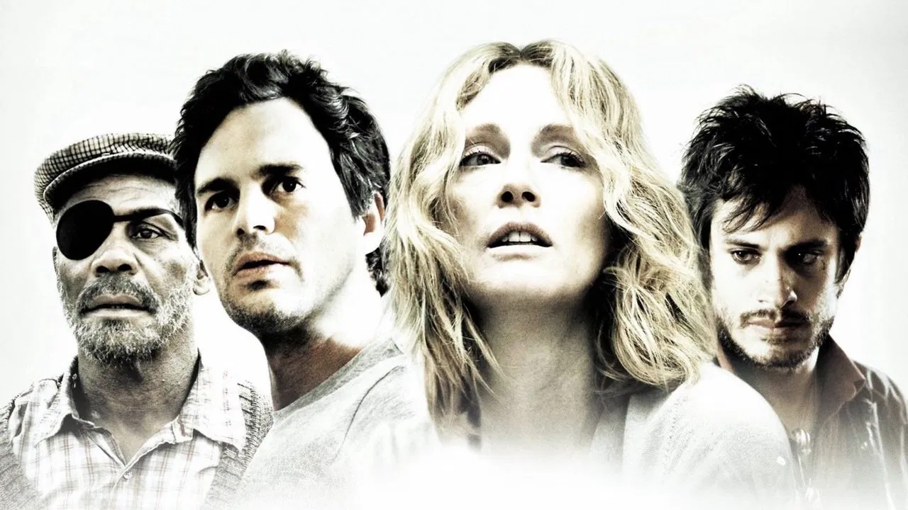
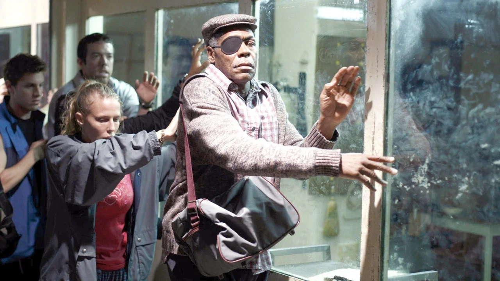
导演与主创 · 他们的历史作品
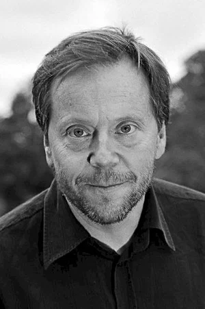
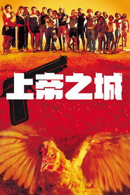
上帝之城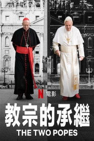
教宗的承继 谋杀绿脚趾
谋杀绿脚趾 禁闭岛
禁闭岛短评（轻微剧透）
轻微剧透：真正的转折在医生的妻子终于动手的那一刻。前面一小时她一直在「看见但不行动」，那场戏之后她不再只是见证者。梅里尔斯没把这个设定拍成寓言，他把它拍成了具体的脏、具体的饿、具体的排队上厕所——这也是当年很多影评人不满的地方：它太实了，实到不好看。轻微剧透：结尾所有人一个接一个复明，而她站在那里哭，因为她知道自己并没有重见光明，她只是终于可以不再装了。
为什么值得一看
想看「文明崩塌的最小单位是怎么失效的」的人；能接受抽象设定、大量裸露与暴力、121 分钟持续压迫感的观众。R 级，含性暴力与群体暴力场面，建议成年观看。内地未映。看完想继续：《饥饿站台》《上帝之城》《狗镇》。
末日危途 The Road
「我们带着火。」
剧情梗概
一场没有解释的灾变之后，天一直是灰的，所有植物都死了。一个男人带着儿子推着一辆超市购物车往南走，车上是一床被子、几罐头和一把左轮——子弹只剩两发。妻子在灾变后不久离开了他们。路上他们要躲开的，是那些已经不再吃罐头的人。
亮点
- 约翰·希尔科特执导，改编自考麦克·麦卡锡 2006 年的普利策奖小说（他也是《老无所依》的原著作者）。
- 第 66 届威尼斯电影节金狮奖竞赛片；维果·莫特森为此片大幅减重，全片几乎没有一场戏是暖色调的。
- 全片不解释灾变是什么：没有爆炸回放、没有新闻播报，你看到的世界就是这两个人看到的世界。
- 柯蒂·斯密特-麦菲出演时 13 岁，「好人」这个词是他一遍遍问出来的——全片的道德重量几乎挂在他身上。
- 原著里父子没有名字，电影保留了这一点：字幕里就是「男人」与「男孩」。
- 豆瓣 7.6 / IMDb 7.2 / 烂番茄 74% / Metacritic 64。
导演与主创 · 他们的历史作品
短评（轻微剧透）
轻微剧透：真正的转折在那间地下室。他们找到一整屋的罐头和水，吃饱、洗澡、灯还亮着——然后听见上面有脚步声。希尔科特把「最好与最坏只差一层天花板」这件事拍得极其干净。轻微剧透：父亲死后，男孩做的第一件事是把枪留在他身边再离开；那把枪在全片里都没响过，这是它唯一一次被交代去处。结局里收留他的那家人说的那句「我们带着火」，是这部片能给出的全部希望。
为什么值得一看
想看一部不解释、不宽慰、但把父子关系写到实处的人；能接受全片灰暗、几乎没有配乐、节奏缓慢的观众。111 分钟。含人食人的暗示与绝望场面，建议成年观看。内地未映。看完想继续：《老无所依》《艾利之书》《芬奇》。
艾利之书 The Book of Eli
「我一直在往西走。」
剧情梗概
战争之后三十年，地表只剩灰和公路。一个独行的旅人往西走，包里有一本不能给人看的书。他走进一座由卡内基控制着水源的小镇，而卡内基也在找那本书——因为他知道，一本能让人重新聚起来的书，比水更值钱。
亮点
- 由休斯兄弟（阿尔伯特·休斯与艾伦·休斯）联合执导，此前的代表作是《威胁社会》与《来自地狱》。
- 成本约 8000 万美元，全球票房约 1.57 亿美元。
- 摄影由唐·伯吉斯完成，全片用一种褪到接近单色的黄褐调子——不是黑白，是把颜色几乎抽干。
- 丹泽尔·华盛顿出演时 55 岁，全片动作戏几乎自己完成；这个角色是「一言不发也会让人让路」那一路。
- 加里·奥德曼演的卡内基，是这类片里少见的一个真的读过书的反派。
- 豆瓣 6.8 / IMDb 6.8 / 烂番茄 46% / Metacritic 53：**本期评分最低，也是本期最「信」的一部**。
导演与主创 · 他们的历史作品
短评（轻微剧透）
轻微剧透：真正的转折在最后那场朗读。艾利一路护送的是一本他其实看不见的书——他是盲人，全书靠背下来。这个设定把「护送经典」从动作片任务，变成了一种身体力行的东西。轻微剧透：卡内基拿到书之后发现那是盲文，是本片最好的一次讽刺：他要的是权力，而这本书对读不了它的人来说，只是纸。结尾印刷机重新转起来的那一段，是这部片唯一一次允许自己煽情。
为什么值得一看
想看「后末日公路片」这一路的人；能接受宗教意味偏重、动作片框架简单、118 分钟里前三十分钟几乎不说话的观众。R 级，含断肢与较直接的暴力，建议成年观看。内地未映。看完想继续：《末日危途》《疯狂的麦克斯4：狂暴之路》《芬奇》。
传染病 Contagion
「平均每人每天接触两百个人。」
剧情梗概
从香港出差回明尼苏达的贝丝在机场咳嗽了两声，两天后死在家中。一种从未见过的病毒顺着航班、门把手和赌场筹码扩散。疾控中心派出调查员，世卫组织派人溯源，一位自媒体写手在镜头前宣称自己被治好了——三条线同时在跑，中间没有英雄，只有流程。
亮点
- 史蒂文·索德伯格自导自摄（摄影署名 Peter Andrews），斯科特·Z·本恩斯编剧；成本约 6000 万美元，全球票房约 1.35 亿美元。
- 剧本有流行病学顾问参与，片中用到的 R0 值、传播模型与疫苗研发周期是真实的量级。
- 全片刻意不给主角光环：凯特·温斯莱特的角色在片中死于疫情，裘德·洛的角色是个造谣的博客写手，他们都不是视点人物。
- 马特·达蒙演的米奇是唯一一个「不被感染但一直在失去家人」的人——他的免疫是这部片最冷的一处设计。
- 索德伯格全程不用音乐提示情绪，靠剪辑与声音把三条线拧在一起。
- 豆瓣 7.4 / 烂番茄 85% / Metacritic 70 / IMDb 6.8：本期专业评价最齐整的一部之一。
导演与主创 · 他们的历史作品
 饥饿游戏
饥饿游戏 十一罗汉
十一罗汉 十二罗汉
十二罗汉 十三罗汉
十三罗汉 极乐空间
极乐空间短评（轻微剧透）
轻微剧透：真正的转折在最后五分钟——索德伯格把时间倒回第一天，让你亲眼看见那只蝙蝠、那辆推土机、那次握手。在此之前的一百分钟全是「结果」，直到这一刻你才知道起点有多小。轻微剧透：这部片真正的冷酷在于它拒绝给出罪人：没有人制造了病毒，只是有一棵树被砍了。结尾那场被包装成阴谋论的电视采访，是它对「事后总要有人负责」这件事最锋利的回答。
为什么值得一看
想看「一部把流程拍到严谨的流行病电影」的人；能接受群像、无主角、情绪被刻意压住的观众。106 分钟。含患者抽搐与死亡镜头，建议小学以上观看。内地 2011-09-09 公映过，流媒体可看。看完想继续：《极度恐慌》《盲流感》《芬奇》。
雪国列车 Snowpiercer
「列车就是世界，世界就是列车。」
剧情梗概
一次失败的气候工程把地球冻成了一颗雪球，最后的人类住在一列永不停车的列车上，按票分级：头等舱在前面，末节车厢在最后。末节的人靠一种不明成分的蛋白块活着，已经十七年。柯蒂斯带着他们一节一节往前打，而他真正要找的，是那个设计这列车的、神一样的男人威尔福德。
亮点
- 奉俊昊执导，改编自法国漫画《Le Transperceneige》；成本约 4000 万美元，是当时韩国史上投资最大的电影之一。
- 第 34 届韩国青龙奖最佳导演、第 50 届大钟奖最佳剪辑与最佳美术；全球票房约 8680 万美元。
- 剧组在捷克搭了长约一百米的真实车厢并让它真的晃动——车头到车尾的空间关系是实拍出来的。
- 蒂尔达·斯文顿演的梅森是全片最被讨论的表演：一个戴眼镜、说话带鼻音的官僚，和这部片的暴力完全不在一个调上。
- 宋康昊演的南宫民秀只想拿到一种叫克洛诺的东西——他不是来革命的，他是来开门的。
- 豆瓣 7.6 / 烂番茄 94% / Metacritic 84 / IMDb 7.1：**Metacritic 84 是本期专业评分最高的一部**。
导演与主创 · 他们的历史作品
短评（轻微剧透）
轻微剧透：真正的转折在柯蒂斯走到车头、听见威尔福德说出的那个真相——暴动本身就是被安排好的，连「牺牲多少人」都是算好的。奉俊昊把一列火车做成了一整套社会模型：每往前一节，你就换一个阶层，也换一种世界观。轻微剧透：最后他选择炸车而不是接手，是这部片最不妥协的一次决定：它拒绝让「推翻之后我来当」成为答案。结尾雪地上那两个小小的身影，是全片唯一一次让你觉得冷是对的。
为什么值得一看
想看「科幻设定与社会隐喻怎么咬合得这么紧」的人；能接受暴力直接、台词有舞台感、结局并不安慰人的观众。126 分钟。含断肢与大量打斗，建议高中以上观看。内地 2014-03-17 公映过。看完想继续：《寄生虫》《杀人回忆》《玉子》。
湮灭 Annihilation
「它不是在毁灭，它是在折射。」
剧情梗概
一颗陨石落进一座灯塔，之后那片区域被一层闪动的薄膜裹住，进去的队伍没有一个回来过。生物学家莉娜的丈夫是唯一回来的人，回来后器官开始衰竭。她带着一支五人小队进入「闪光」，发现里面的植物长成人形、鹿角上开出花，而每一种生物都在互相读取对方的基因。
亮点
- 亚力克斯·加兰自编自导，改编自杰夫·范德米尔的小说《遗落的南境》第一部——他没读完后面两部就写了剧本。
- 成本约 4000 万美元，北美票房未过 4300 万美元，随后由 Netflix 在北美以外上线。
- 那些「长成人形」的植物与动物是实景搭建与特效结合：加兰坚持能实拍的先实拍。
- 娜塔莉·波特曼演的莉娜不是典型英雄：她进入区域的动机里有一半是赎罪。
- 结尾那段双人舞般的对峙，全片没有任何台词解释，只有动作与光。
- 豆瓣 7.2 / 烂番茄 88% / Metacritic 79 / IMDb 6.8。
导演与主创 · 他们的历史作品
 机械姬
机械姬 黑天鹅
黑天鹅短评（轻微剧透）
轻微剧透：真正的转折在莉娜终于走到灯塔下面，看见那个「复制」她的东西——它不是怪物，它在学她；她的每一个动作都被先一步模仿，直到她放弃挣扎、把磷弹递过去。加兰给这部片的题目不是「外来入侵」，是「自我毁灭」：进入区域的人一个个被自己的东西吞噬。轻微剧透：结尾那两个幸存者互相拥抱的镜头，是这部片留给你最不安的一句——回来的那个人，到底还是不是同一个人。
为什么值得一看
想看「恐怖与科幻的边界被做成一部片」的人；能接受节奏缓慢、解释极少、结局开放、115 分钟里大部分时间处在不确定中的观众。R 级，含身体恐怖与血腥画面，建议成年观看。内地未映，流媒体可看。看完想继续：《机械姬》《降临》《皮囊之下》。
芬奇 Finch
「我只要求它答应我一件事。」
剧情梗概
太阳耀斑之后，地表紫外线足以在几分钟内烧穿皮肤，白天不能出门。一个叫芬奇的工程师带着他的狗住在地下实验室里。他知道自己的时间不多了，于是花了几年做了一台机器人，教会它走路、说话、认字，也教会它一件事：如果他不在了，要替他照顾这条狗。
亮点
- 米格尔·萨普什尼克执导——他此前最被人知道的身份是《权力的游戏》多集的导演（含「私生子之战」与「长夜」），《芬奇》是他自《重生男人》之后时隔十一年的第二部长片。
- 2021-11-05 在 Apple TV+ 上线，几乎没有院线放映。
- 机器人杰夫由卡莱伯·兰德里·琼斯穿着实体道具服演出并配音，不是纯 CG。
- 全片只有三个角色：一个人、一条狗、一台机器人，其中狗是真狗。
- 公路段落取景于新墨西哥与犹他的真实荒地，地表那层永远偏黄的光是实景拍的，不是调色。
- 豆瓣 8.4 / 烂番茄 74% / Metacritic 58 / IMDb 6.9：**豆瓣是本期最高的一部，专业评分则明显保守得多**。
导演与主创 · 他们的历史作品
 拯救大兵瑞恩
拯救大兵瑞恩 逃出绝命镇
逃出绝命镇 三块广告牌
三块广告牌短评（轻微剧透）
轻微剧透：真正的转折在芬奇终于没能走出那辆车。这部片让人难受的地方在于，它一开始就把结局说清楚了——你从头就知道他会死，所以你一路看的不是「他能不能活」，是「他能不能来得及把该教的教完」。轻微剧透：杰夫学会的最后一句话是「我会照顾它」；萨普什尼克把整部片的感情压在这一句上，没有多加一句。结尾机器人带着狗走上大桥那一镜，是本期唯一一次让人想立刻打电话给谁的场面。
为什么值得一看
想看一部几乎没有反派、几乎不发生冲突的后末日片的人；能接受节奏舒缓、115 分钟里两个主角大部分时间只是在赶路的观众。PG-13，含疾病与死亡主题，儿童可陪同观看。内地未映，Apple TV+ 可看。看完想继续：《我是传奇》《末日危途》《人工智能》。